Haussmann, by command
The maison à loyer at N° 77 boulevard de Sébastopol, Paris (Paul Mesnard, published by César Daly in 1870), built to scale from the 1:100 elevation and 1:200 plans through the modelling command API: one plan n-gon extruded storey by storey, every opening an inset, cornices mitred round both cut corners, a 45° mansard by inset, railings on live curve arrays, dormers on live arrays. Then a short realism pass with the realism kit on the parts as built. Every dimension is measured back off the model.

The film
node demos/haussmann/record.mjs (see direction.md).2:43 · 1920×1080 · 30 fps · H.264, faststart · rendered frame by frame on ANGLE (Apple, ANGLE Metal Renderer: Apple Paravirtual device, Unspecified Version)
Metrics
Realism pass: before and after
No geometry rebuilt (30-minute budget): the realism kit applied to the parts that exist. Stone: UVs at a 0.3 m tile and a tiling relief (the kit has no stone pattern yet, so its grain pattern stands in for tooled limestone). Roof and dormers: the metal-satin preset as zinc. Railings, balconettes and guards: metal-dark as wrought iron. Panes: screen-glass. Pavement: 1.2 m slab joints and a kerb line cut with groove (Manifold boolean). The facade itself could not take grooves for its rusticated courses: after the panes are separated it is an open shell (540 boundary edges), and groove cuts closed manifolds only; cut: false strips per pier would do it.

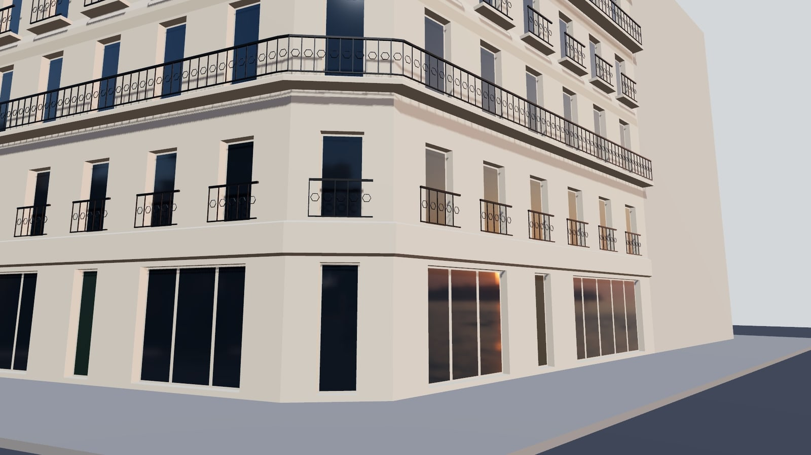

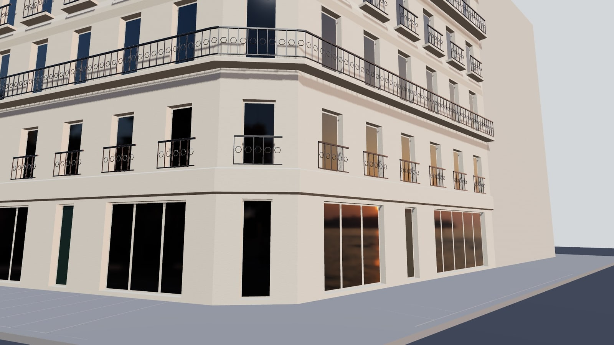
Key steps

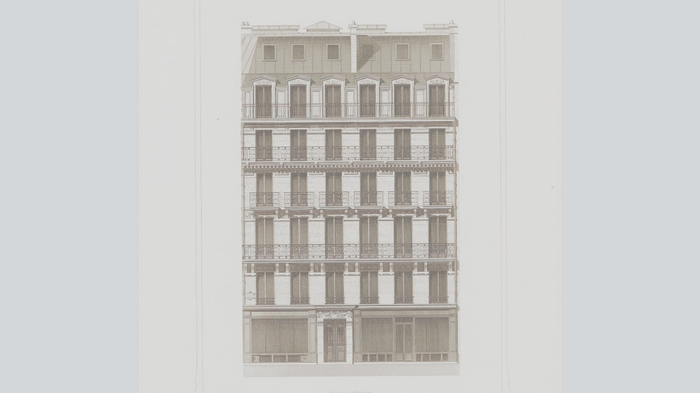

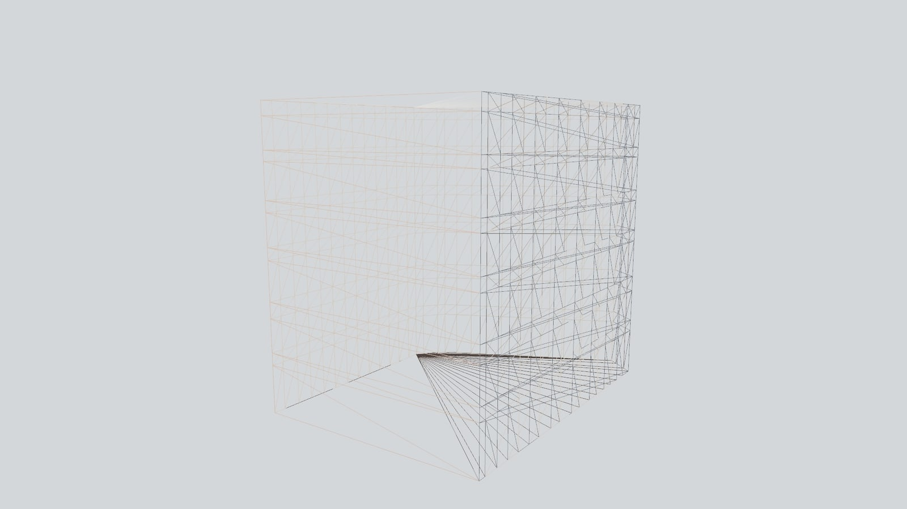

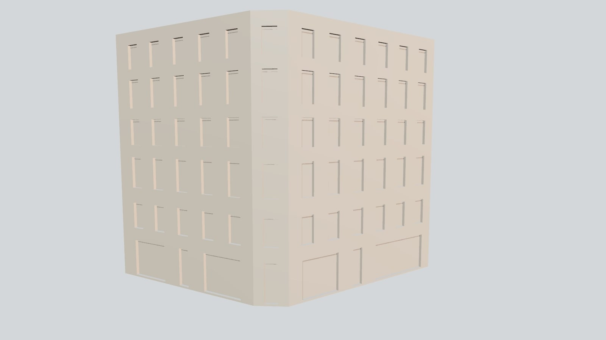

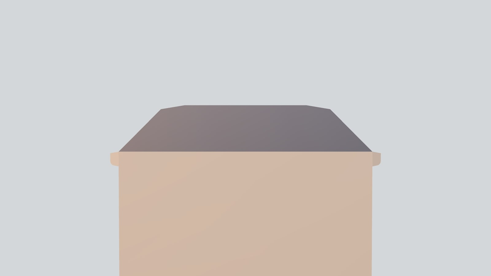

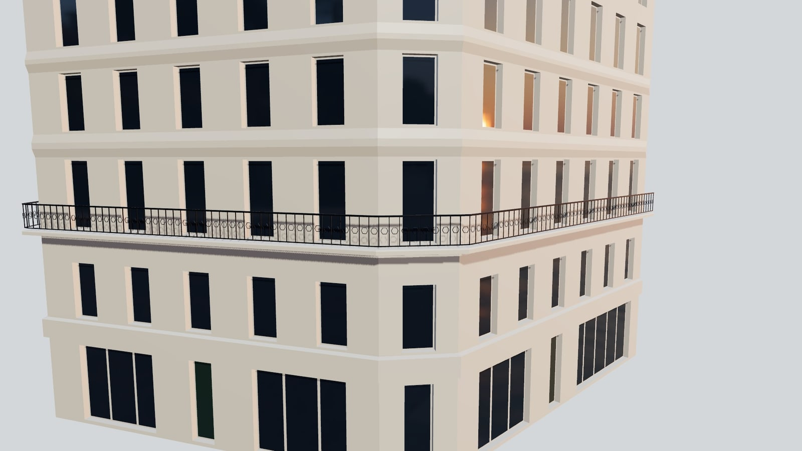

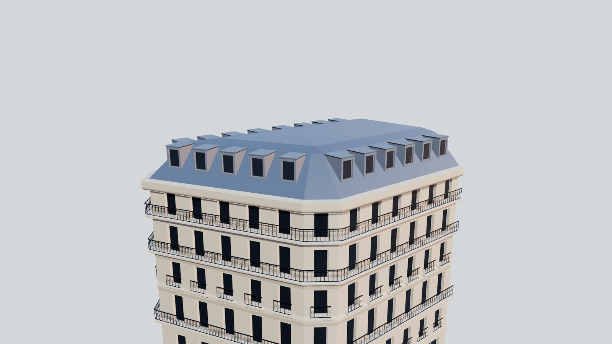

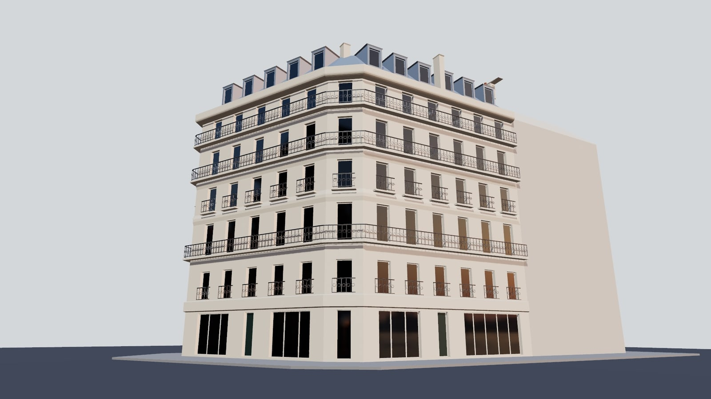

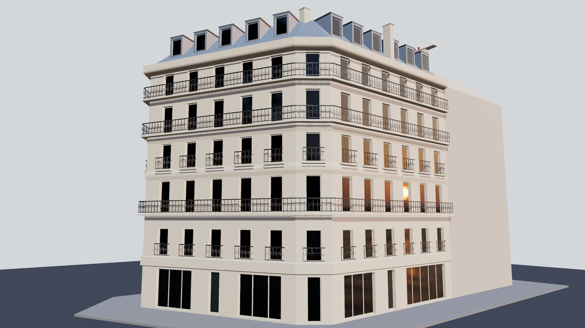

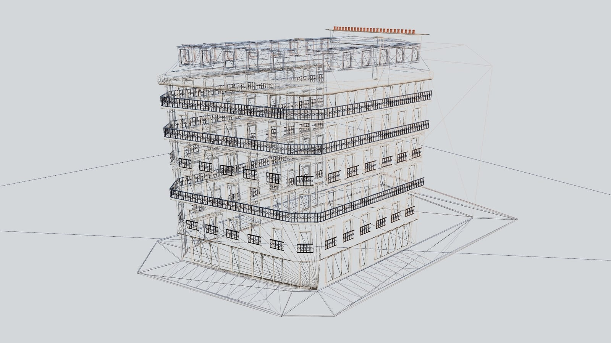

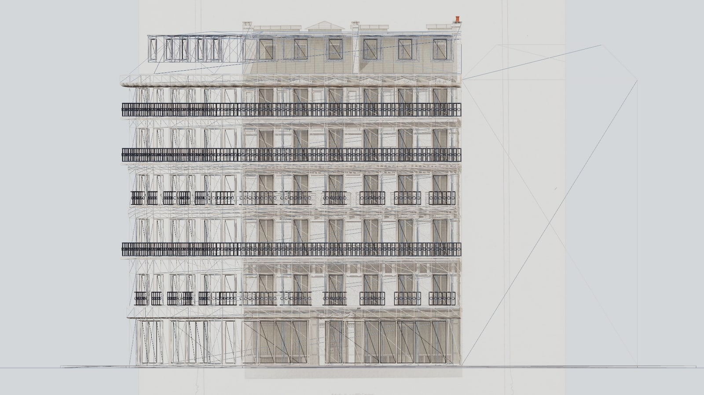

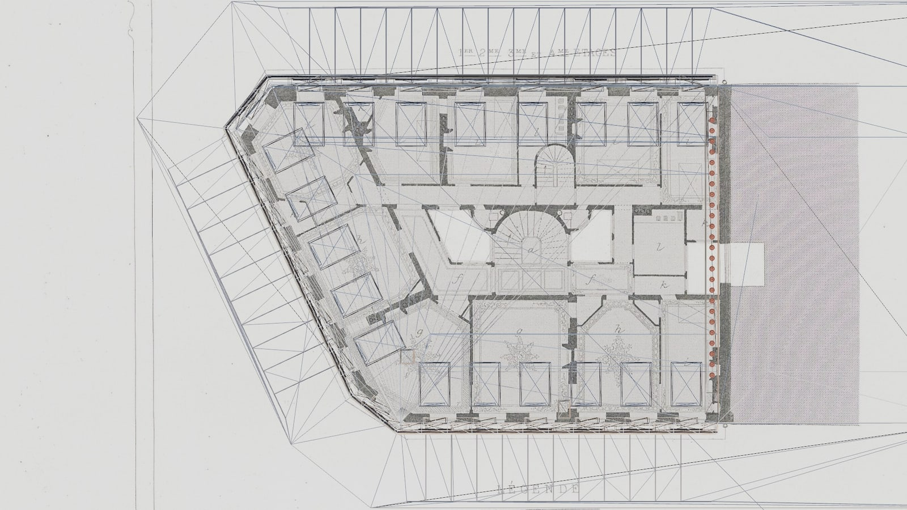

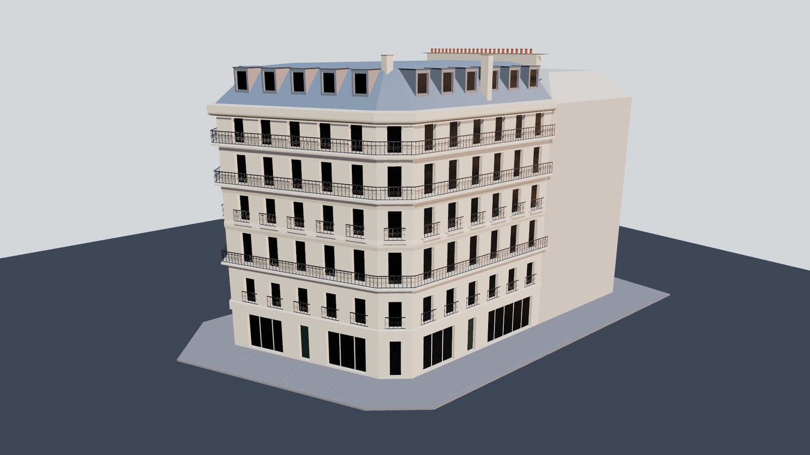
Checks
| check | reference | model | off | |
|---|---|---|---|---|
| cornice height above the pavement (1859 limit: 20 m) | 19.945 | 19.945 | 0 | PASS |
| boulevard front, cut corner to party wall | 14.931 | 14.931 | 0 | PASS |
| depth, boulevard to rue Palestro | 15.833 | 15.833 | 0 | PASS |
| rue Palestro front | 20.973 | 20.973 | 0 | PASS |
| rue Greneta front | 13.544 | 13.544 | 0 | PASS |
| cut corner, Greneta / boulevard | 2.467 | 2.467 | 0 | PASS |
| cut corner, Palestro / Greneta | 2.647 | 2.647 | 0 | PASS |
| rue Greneta, angle off square (deg) | 25.295 | 25.295 | 0 | PASS |
| 2nd-floor balcony, top of slab | 7.418 | 7.418 | 0 | PASS |
| 4th-floor balcony, top of slab | 13.874 | 13.874 | 0 | PASS |
| 5th-floor balcony, top of slab | 16.964 | 16.964 | 0 | PASS |
| balcony projection (boulevard) | 0.5 | 0.5 | 0 | PASS |
| 3rd-floor balconettes, top of slab | 10.92 | 10.92 | 0 | PASS |
| 1st floor (the window guards stand on it) | 4.052 | 4.052 | 0 | PASS |
| boulevard windows, 2nd floor | 6 | 6 | 0 | PASS |
| bay spacing, boulevard | 2.371 | 2.371 | 0 | PASS |
| window opening, between stone jambs | 1.209 | 1.209 | 0 | PASS |
| top of the brisis | 22.596 | 22.596 | 0 | PASS |
| brisis pitch (deg; 1859: within 45°) | 45 | 45 | 0 | PASS |
| chimney tops (party-wall stack, capping) | 23.5 | 23.5 | 0 | PASS |
| main cornice projection | 0.55 | 0.55 | 0 | PASS |
How it was made
build.mjs is the demo's session build script: measured data (pixel readings off Daly's plates, with the plate and row cited), then the build as commands, then the checks - each dimension measured off the model, not restated from constants. The realism pass is its own block at the end of the build (session.realism, on by default). record.mjs runs the unchanged build in examples/modelling-api on the GPU VM through demos/shared/session.mjs: its camera jumps become eased glides, each capture a held shot with its caption, each beat a title card; demos/shared/film.mjs renders and captures every frame. The shadow camera of the sun is sized to the block by the film (the light command has no parameter for it yet).
Re-run: node demos/haussmann/record.mjs then node demos/shared/report.mjs demos/haussmann. The plates and photographs come from refs/ (not committed; refs/SOURCES.md).
The film ran 397 commands (0 failed), 1030.5 ms of command time in the page on the GPU. By operation:
The first commands of the transcript (transcript.json has all of them, with results):
{"op":"delete","object":"*"}
{"op":"lighting","environmentIntensity":0.75,"background":"#d6dde4"}
{"op":"light","name":"sun","type":"directional","position":[-40,60,45],"target":[5,8,-8],"intensity":2.4,"castShadow":true}
{"op":"reference","name":"elevation","plane":"front","image":"/demos/haussmann/refs/daly-1870-m2-pl1-elevation-77-bd-sebastopol.jpg","opacity":0.85,"calibrate":{"from":[0.24315391879131257,0.7318976279650437],"to":[0.756
{"op":"reference","name":"elevation","plane":"front","origin":[7.472527472527473,10.206043956043956,-19.83283326457388]}
{"op":"reference","name":"plan","plane":"top","image":"/demos/haussmann/refs/daly-1870-m2-pl3-plans-77-bd-sebastopol.jpg","opacity":0.9,"calibrate":{"from":[0.3881019830028329,0.3960674157303371],"to":[0.6494695360738448
{"op":"reference","name":"plan","plane":"top","origin":[6.392472714998312,-0.2,8.981828751453325]}
{"op":"camera","projection":"perspective","fov":40}
{"op":"reference","name":"elevation","plane":"front","visible":false}
{"op":"reference","name":"plan","plane":"top","visible":false}
{"op":"primitive","type":"circle","name":"facade","segments":48,"radius":1,"color":"#ddd0b6"}
{"op":"vertices","object":"facade","verts":[[0,0,0,0],[1,1.0027472527472527,0,0],[2,2.2115384615384617,0,0],[3,3.3653846153846154,0,0],[4,4.574175824175825,0,0],[5,5.762362637362637,0,0],[6,6.971153846153847,0,0],[7,8.14
{"op":"extrude","object":"facade","faces":[0],"direction":[0,1,0],"distance":3.228021978021978}
{"op":"extrude","object":"facade","faces":[1],"direction":[0,1,0],"distance":0.8241758241758239}
{"op":"extrude","object":"facade","faces":[49],"direction":[0,1,0],"distance":2.2664835164835173}
{"op":"extrude","object":"facade","faces":[97],"direction":[0,1,0],"distance":1.0989010989010985}
{"op":"extrude","object":"facade","faces":[145],"direction":[0,1,0],"distance":2.678571428571429}
{"op":"extrude","object":"facade","faces":[193],"direction":[0,1,0],"distance":0.8241758241758248}
{"op":"extrude","object":"facade","faces":[241],"direction":[0,1,0],"distance":2.197802197802197}
{"op":"extrude","object":"facade","faces":[289],"direction":[0,1,0],"distance":0.7554945054945055}
{"op":"extrude","object":"facade","faces":[337],"direction":[0,1,0],"distance":2.403846153846155}
{"op":"extrude","object":"facade","faces":[385],"direction":[0,1,0],"distance":0.6868131868131861}
{"op":"extrude","object":"facade","faces":[433],"direction":[0,1,0],"distance":2.0604395604395584}
{"op":"extrude","object":"facade","faces":[481],"direction":[0,1,0],"distance":0.9203296703296715}
…
What still looks weak
- Stone has no coursing: the rusticated ground floor and entresol (refends) need joint strips per pier, since the facade is an open shell after the panes are separated.
- No mouldings: the cornice and string courses are stepped boxes (an inset with depth), not ogee/cyma profiles - the realism track's architecture parts (R3) are not built yet.
- Window frames, shutters, shop fronts and the door are flat recessed panes; no mullions or glazing bars.
- The kit has no stone or zinc presets and no stone relief pattern; the pass uses the plastic-grain relief and the satin-metal preset as stand-ins.
- Lighting is one sun and the venice_sunset HDRI on a plain sky colour: no ambient occlusion, so recesses read shallow.
Credits
César Daly, L'architecture privée au XIXe siècle (1870), Exemple M2 plates - public domain. Street photograph: rue Monge corner by Thierry Bézecourt (Thbz), CC BY-SA 3.0, Wikimedia Commons.